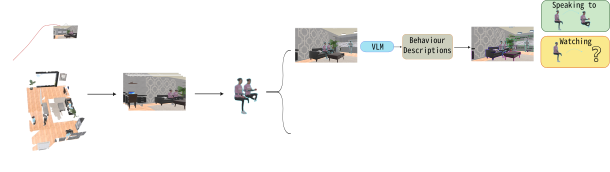
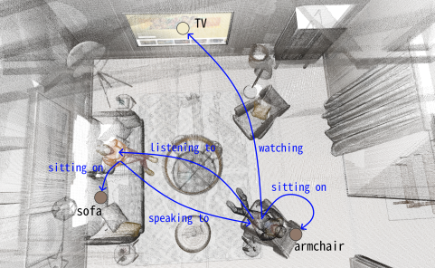
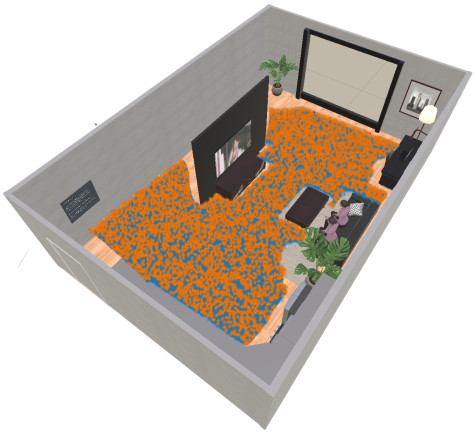
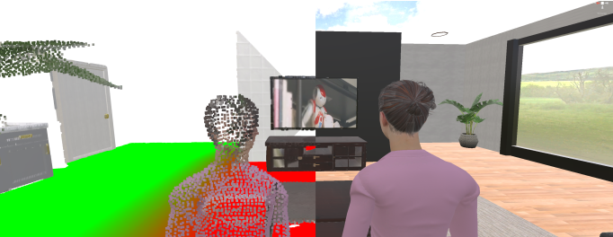
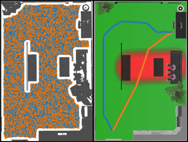

Abstract
Understanding how people interact with their surroundings and with each other is essential for enabling robots to act in socially compliant and context-aware ways. 3D Scene Graphs are a powerful representation for capturing the geometry and semantics of an environment, but existing formulations largely ignore humans: they omit human–environment interactions, describe only single-frame spatial relationships, and miss activities and interactions that unfold across the scene rather than in one glance.
We introduce Social 3D Scene Graphs, an augmented representation that captures humans, their attributes, and their local and remote activities and relationships within an environment, built with an open-vocabulary pipeline so it is not tied to a fixed taxonomy of actions or objects. To recover this representation we propose ReaSoN, a four-stage pipeline that describes human behaviour with vision-language models, estimates each person's field of view via 3D head pose and frustum reasoning, and uses an LLM to resolve which activities are actually supported by what is visible — even when the relevant object or person is outside the current frame.
We further contribute SocialGraph3D, a new benchmark of synthetic and real indoor scenes with multi-annotator ground-truth human–activity–object relationships, together with an evaluation protocol for social scene understanding. Our experiments show that reasoning about remote, out-of-frame interactions substantially improves both activity prediction and downstream question answering about how humans relate to their environment.
Method — the ReaSoN pipeline
ReaSoN turns posed RGB-D video into a Social 3D Scene Graph through four stages: describing what a person is doing, estimating what they can see, resolving ambiguous activities with spatial reasoning, and consolidating everything into clean, canonical relations.

1. Activity Descriptor
Segments each person in the reconstructed scene and prompts a vision–language model for a free-form behaviour description, yielding local activities that are directly visible and remote activities that are plausible but not yet confirmed.
2. Interaction Context Estimator
Estimates each person's 3D head pose and models their visual frustum against the map, determining — with occlusion reasoning — exactly which objects and people are actually within view.
3. Activity Solver
An LLM performs spatial reasoning over the visible entities to validate remote activities, linking each one to the correct object or person when it is contextually and geometrically plausible.
4. Activity Consolidation
Canonicalizes linguistic variation with semantic frames and prunes low-frequency, spurious detections — turning noisy per-frame proposals into a stable set of scene-graph relations.
The SocialGraph3D benchmark
A new benchmark pairing synthetic Unity homes with real captured scenes, annotated by multiple raters, for evaluating human–activity–object understanding in 3D scene graphs.
(8 synthetic + 3 real)




Results
Activity & relationship prediction (F1, %)
| Method | Overall | Map 1 | Map 2 | Map 3 | Real A | Real B | Real C |
|---|---|---|---|---|---|---|---|
| ReaSoN (ours) | 58.2 | 66.7 | 61.0 | 66.7 | 48.5 | 48.5 | 48.6 |
Social scene understanding (accuracy, %)
| Query type | Spatial | Activity | Functional | Mean |
|---|---|---|---|---|
| ReaSoN (ours) | 79.8 | 81.9 | 64.6 | 75.4 |
Inference speed vs. accuracy trade-off
| Method | F1 (%) | Seconds / frame |
|---|---|---|
| ReaSoN | 58.2 | 5.43 ± 0.78 |
| LocalReaSoN (local activities only) | 45.1 | 2.60 ± 0.56 |
LocalReaSoN skips the remote-activity reasoning stages, trading accuracy for roughly 2× faster inference — see the paper for the full ablation.
Gallery
Citation
If you find this work useful, please cite:
@inproceedings{bartoli2026social3dsg,
title = {Social 3D Scene Graphs: Modeling Human Actions and Relations for Interactive Service Robots},
author = {Bartoli, Ermanno and Rotondi, Dennis and He, Buwei and Jensfelt, Patric and Arras, Kai O. and Leite, Iolanda},
booktitle = {IEEE/RSJ International Conference on Intelligent Robots and Systems (IROS)},
year = {2026},
eprint = {2509.24966},
archivePrefix = {arXiv}
}